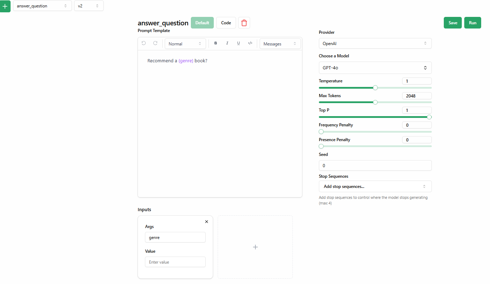

Prompt Evaluation: Methods, Tools, And Best Practices¶
Prompt evaluation measures how effectively a prompt guides an LLM to generate responses that satisfy the goals of a task or application.
Unlike LLM evaluation, which assesses a model's overall performance across various tasks (its general strength), prompt evaluation zooms in on the prompt itself — judging how well a particular prompt is structured to produce your desired output — be it in customer support, content generation, or other use cases.
This is important because a poorly designed prompt can lead to unclear, irrelevant, or inaccurate responses, resulting in outputs that fail to meet the intended objectives.
When evaluating prompts, you should:
- Define clear and actionable criteria to measure prompt effectiveness (e.g., clarity, output relevance, bias, etc.). But since there’s no universal metric for defining a “perfect” prompt, evaluation success becomes subjective — especially when relying on qualitative criteria.
Also, language models can carry biases from their training data, influencing responses in ways that weren’t intended. - Implement a process to evaluate prompts against these criteria. This often involves using frameworks or automated tools for repetitive tasks like scoring outputs or ranking responses, while reserving more subtle aspects like detecting hallucinations or addressing culturally sensitive contexts for human oversight.
In this article, we show you different ways to evaluate prompts and share practical techniques and insights based on real-world applications. Along the way, we’ll also examine how Lilypad helps structure this evaluation process, making it easier to iterate, compare, and optimize prompts at scale.
Further down, we also share best practices for prompt evaluation and example evaluations using Mirascope, our lightweight toolkit for building with LLMs.
Prompt Evaluation Metrics¶
Below are some measurable criteria for prompt evaluation:
Clarity¶
This measures how well a prompt communicates the intended request to the model, minimizing any potential for confusion. Since clarity is inherently subjective, it’s a qualitative measure that assesses whether the prompt is specific, unambiguous, and easy to interpret.
For example, when designing prompts for a customer support assistant, a prompt like "Assist the customer with their issue.” might lead to a generic or unhelpful response. Instead, a clearer prompt such as “Ask the user about their billing issue and provide relevant support options” allows the model to focus on a specific task — helping the user with an account-related problem.
The goal of prompt evaluation is generally to see if the prompt leaves any room for misinterpretation. If the model’s output doesn’t align with your expectations, it might be a clue that the prompt wasn’t clear enough.
Relevance¶
Relevance assesses how well a generated answer aligns with the user's intent and the specifics of the prompt. This metric can be evaluated both qualitatively (through human judgment) and quantitatively (using scoring models or similarity metrics).
For example, say you’re seeking career advice and ask, “What skills should I develop to become a data analyst?” Here, your prompt is clear and should return a relevant response recommending core skills like Python, SQL, or data visualization along with specific tools and techniques required for the role.
However, the model can sometimes go off-track and suggest something generic or even somewhat irrelevant, like “learn how to use Excel”, "network more" or basic computer skills like formatting spreadsheets. While these are technically useful in some scenarios, they don’t address the specific intent of preparing for a data analyst role.
Correctness¶
Correctness metrics reveal whether the prompt is effectively designed to generate accurate output. You can evaluate this quantitatively by using fact-checking tools that compare responses to verified sources or by having experts manually review answers for accuracy.
Completeness¶
Completeness is often judged by human reviewers who check whether a response fully answers the prompt. A high completeness score means the response not only addresses the core question but also considers any additional context or secondary queries that may have been implied or included in the prompt.
Consistency¶
Consistency measures the uniformity of the model's output in terms of tone, style, and structure. As a qualitative metric, it relies on subjective evaluations rather than numerical data — ensuring that the response aligns with the expectations set by the prompt and maintains a coherent style throughout.
For example, if the prompt is formal, the response should reflect that tone, and if the task requires technical language, the response should adhere to that level of specificity.
Inconsistent outputs, where the response suddenly shifts from formal to informal or includes contradictory information, might signal that the prompt isn’t specific enough — or that the model’s randomness settings (like temperature) need adjusting.
5 Frameworks for Prompt Evaluation¶
Below are five notable frameworks designed to help you evaluate and refine prompts systematically.
Each tool offers unique features to address different aspects of prompt evaluation, making it easier to test, compare, and optimize for your specific use case.
Lilypad¶
Lilypad allows you to automatically version, trace, and manage prompts (generations) by simply adding the Python decorator @lilypad.generation to your LLM functions.
It recognizes the non-deterministic nature of LLM outputs and treats prompts and everything else that goes into generating the output as optimization problems rather than as one-time configurations that don't adapt to real-world performance.
Each prompt variation is automatically versioned and iterated upon based on real-world performance.
When evaluating prompts, you’d normally have a clear evaluation criteria such as bias, toxicity, or factual accuracy. While this is good practice, we generally don’t recommend treating them as separate categories for every prompt. Instead, consider using a single LLM-based judge that provides a simple pass/fail rating, where a “pass” means the output meets your standards and a “fail” indicates it needs improvement.
Along with the label, our LLM-judge explains its reasoning based on your evaluation criteria, giving you insight into why a response passed or failed (more on this below. We’re working on additional tooling to more easily support this flow.
By analyzing these explanations, you can detect patterns such as bias issues consistently appearing in failed outputs without needing separate evaluations for each category, which may be unnecessary.
Lilypad also allows easy collaboration between engineers and domain experts via a managed user interface, where non-technical users can tweak and evaluate prompts without altering (or even necessarily seeing) the underlying code, simplifying the process for non-technical users without needing to change engineering workflows:

Lilypad’s design provides a structured approach to optimizing prompts from the get-go, allowing for controlled experiments and efficient annotation of LLM outputs.
Promptfoo¶
Promptfoo helps you test and refine your prompts before using them in a live setting. It works by running batches of prompts against one or more LLMs, collecting the results, and letting you compare how well each version meets your specific criteria — like clarity, accuracy, or relevance.
Promptfoo lets you automate evaluations against predefined test cases and assertions, conduct red-teaming (i.e., using adversarial or unexpected inputs to uncover vulnerabilities) for security, and streamline workflows using features like caching, concurrency, and live reloading.
It also allows you to define custom metrics for scoring outputs and integrates with CI/CD pipelines for continuous testing.
OpenAI Playground¶
OpenAI Playground provides a controlled environment allowing developers to build and test prompts in real time — no coding required. After you sign up for an account, you can simply type in prompts, adjust settings like temperature, and instantly see how the AI responds.
What makes it especially handy is that you can toggle between different modes such as chat, completion, or even assistant-type interactions without needing any complex setup. This lets you test various prompts, brainstorm ideas, or just get a feel for how the model behaves under different parameters.
While OpenAI Playground isn’t designed as a heavy-duty development environment, it lets anyone quickly experiment and iterate on prompt ideas for immediate results.
Note: OpenAI Playground only supports OpenAI models, so it may not be suitable if you're working with other LLM providers (e.g. Anthropic’s Claude or Mistral).
PromptLayer¶
PromptLayer helps users iterate, build, and run batch evaluations on top of their prompts, and offers a visual interface for writing and organizing prompts, making it easier to refine them without coding.
Its middleware functionality integrates with existing applications by wrapping OpenAI API requests, meaning that it records data about each request after it’s sent, including the prompts used and the responses received, without requiring changes to the application's architecture.
It automatically logs every request and response without requiring you to modify your existing codebase. This lets you maintain a clear record of your prompts, version them over time, and even run A/B tests to compare performance.
PromptLayer facilitates team collaboration, allowing non-technical team members to work alongside engineers in the prompt development process.
Promptimize¶
Promptimize is a prompt engineering evaluation and testing toolkit, inspired by the principles of test-driven development (TDD).
It uses “prompt cases” (akin to software test cases) paired with evaluation functions, allowing you to assess how well your prompts meet specific criteria. By supporting dynamic prompt generation, Promptimize encourages the exploration of multiple variations at once, showing how different formulations can impact the responses you receive.
On the back end, it executes and ranks these prompt suites across various models and settings, so you can see which configurations perform best. It keeps track of performance metrics over time, pointing out improvements or regressions as you refine your prompts.
To help manage costs, Promptimize minimizes API calls by only re-checking the parts of a prompt that have changed. Plus, if you want human oversight for any problematic or borderline cases, you can integrate manual review into the process, ensuring you don’t rely solely on automated metrics to gauge effectiveness.
Using Frameworks vs Custom Evaluations¶
Frameworks like the ones mentioned above aren’t explicitly designed for evaluating prompts alone but rather assess the overall performance of LLMs.
However, while these tools work well for broad evaluations, relying solely on them for prompt evaluation may not fully address the unique needs of your application.
That’s why we generally recommend building custom evaluation flows tailored to your specific use case.
Custom flows give you the flexibility to define metrics and criteria that reflect the exact qualities your application requires. After all, if you’re say, prompting for precision in your tech docs, your evaluation criteria should prioritize correctness and context — tying directly into context-specific metrics (which we discuss below).
Keep in mind that we’re not advocating ditching general frameworks as they can save you time and effort compared to manual assessments.
However, for niche or specialized applications, combining general frameworks for broader assessments with custom evals for addressing gaps might help you get the depth of insight needed to refine prompts effectively.
For example, an AI-assisted legal document reviewer might use a framework for automating evals of overall clarity and relevance while including a custom eval for assessing regulatory alignment.
Methods for Evaluating Prompt Effectiveness¶
Below we list five common open-source techniques for evaluating prompts, ranging from automated scoring techniques to more subjective, human-driven evaluations.
Each of these methods offers unique advantages and can be used individually or in combination, depending on the goals of the evaluation:
Human Evaluation¶
Human evaluation involves asking reviewers to assess outputs based on qualitative factors like relevance, correctness, and tone.
This method is especially important because it allows reviewers to look at actual data and see firsthand how the system is performing. By analyzing real outputs, evaluators can better identify areas for improvement, especially in failure cases.
Rating Scales¶
Often you'll see examples of reviewers scoring responses on a scale (e.g., 1-5) based on specific criteria like relevance or clarity. One of the most common methods is the Likert scale, which allows evaluators to express their opinions on a range from "strongly disagree" to "strongly agree."
These scales can be adapted to measure different aspects of output quality, such as quality of information, understanding and reasoning, expression style and persona, etc.
# Rate the relevance of the following response to the prompt:
Your Task: "Score this response from 1 (not relevant) to 5 (very relevant)and provide reasons for your score."
Prompt1 = "What are the benefits of regular exercise?"
Response = "Regular exercise improves cardiovascular health, boosts mood, and enhances overall fitness."
# Evaluate clarity instead:
Prompt2 = "How clear is this explanation? Score it from 1 (very unclear) to 5 (very clear)."
Response = "Exercise helps you stay healthy by making your heart stronger and improving your mood."
However, we generally recommend using a simpler pass/fail evaluation instead of rating scales. The added granularity of numeric scoring can introduce unnecessary complexity.
Think: what’s the real difference between a 3.7 and a 4.2? Does one pass while the other fails? Where do you draw the line?
A binary pass/fail system makes the outcome clearer: either the output meets expectations (passes), or it fails and can be improved until it does.
Paired Comparisons¶
In paired comparisons, reviewers are presented with two or more outputs generated from different prompts and they are to select the one that better meets the evaluation criteria.
Here, evaluators use a comparative evaluation method to identify subtle differences between outputs that may not be apparent when evaluating each response in isolation. They justify their choices based on specific aspects like informativeness or engagement.
For instance, if you’re comparing two responses to, say our previous example question "What are the benefits of exercise?", evaluators might focus on which response provides more comprehensive information or resonates better with the intended audience:
Task 1: Which response do you believe provides a better answer? Justify your choice.
Prompt = "Compare these two responses to the question: 'What are the benefits of regular exercise?'"
Response A = "Regular exercise can help maintain a healthy weight, reduce the risk of chronic diseases, and improve mental health."
Response B = "Exercising regularly is good because it keeps you fit and makes you feel happy."
Task 2: Explain what makes one response superior to the other.
Prompt = "Evaluate the following outputs for the question: 'How does exercise affect mental health?'"
Response A = "Exercise releases endorphins, which can reduce feelings of depression and anxiety."
Response B = "When you work out, you feel better mentally because it helps with stress."
As we see above, Response A in both cases is more informative, structured, and specific.
It provides clear explanations and supporting details (e.g., mentioning chronic diseases or endorphins). In contrast, Response B is vague and lacks depth — in which case, an evaluator would likely select Response A as the better answer.
Annotation Tasks¶
In annotation tasks, reviewers can mark grammatical errors, awkward phrasing, or inaccuracies in the content.
They could also suggest rephrasing certain sections for better readability or recommend adding examples to make the explanation clearer. This granular feedback helps in refining prompts and improving response quality.
Below, we evaluate how well the following prompts guide the model in generating a meaningful response.
Example one:
Task : Suggest corrections for any highlighted issues
Prompt = "Explain why a balanced diet is important."
Response = "Eating food is good for you. If you eat, you can be strong and not feel sick."
As seen, the above response is vague and lacks substance. It doesn’t mention key factors like nutrients, energy levels, or disease prevention.
Here, an evaluator might annotate it to highlight missing details and recommend adjusting the prompt to explicitly request a more informative answer, such as:
Revised Prompt: "Explain why a balanced diet is important, including its benefits for overall health and examples of key nutrients."
Example two:
Task : Evaluate engagement and clarity
Prompt = "Describe the role of photosynthesis in plant growth."
Response = "Photosynthesis helps plants grow by using sunlight to make food, which they need to survive and stay healthy."
The above response is mostly correct but lacks precision in describing the process. It doesn’t explain how sunlight is converted into energy or mention key elements like carbon dioxide and oxygen exchange.
In this case, an evaluator might annotate missing details and suggest refining the prompt for a more structured and informative response.
A possible prompt adjustment could be "Describe the role of photosynthesis in plant growth, explaining the steps of the process and why they are important for the plant’s survival.”
That said, some teams also experiment with an LLM-as-a-judge approach, where a separate LLM model is used to review and score outputs based on predefined criteria. While this technique can reduce manual workloads, it’s still prone to the inherent biases and limitations of AI. Human oversight remains essential to validate the results and mitigate risks like hallucination or bias. Otherwise, who is judging the judge?
We’re currently working on a system with Lilypad to help teams escape this potential infinite judging loop and build automated evaluations and data flywheels more easily.
Automated Metrics¶
Automated metrics are quantitative methods that use algorithms to evaluate outputs based on predefined criteria. These methods are efficient, scalable, and especially useful when assessing large datasets:
BLEU/ROUGE Scores¶
Commonly used for text generation tasks, these compare generated outputs with reference texts to measure overlap in terms of word choice and structure.
The example below uses the natural language toolkit (NLTK) to calculate the BLEU (Bilingual Evaluation Understudy) score by comparing n-gram overlaps between the reference and candidate text:
from nltk.translate.bleu_score import sentence_bleu
reference = [['that', 'book', 'is', 'great']]
candidate = ['that', 'book', 'is', 'great', 'also']
score = sentence_bleu(reference, candidate)
print(f"BLEU score: {score:.4f}")
> BLEU score: 0.6687
This BLEU score here indicates a 66.87% match between the candidate and reference text.
Below we show an example of ROUGE (Recall-Oriented Understudy for Gisting Evaluation).
This demonstrates how to compute the ROUGE-2 F1 score, which measures the overlap of bigrams between the candidate and reference text, providing an indication of their similarity:
from rouge import Rouge
reference = 'this book is great'
candidate = 'this book is great too'
rouge = Rouge()
scores = rouge.get_scores(candidate, reference)[0]
['rouge-2']
['f']
print(scores)
> 0.8571428522448981
The ROUGE-2 score of 0.8571 reflects a high degree of overlap between bigrams in the candidate text and the reference text.
Perplexity¶
This measures how well a model predicts the next word in a sequence, with lower perplexity indicating higher fluency and coherence.
It’s defined as the exponentiated average negative log-likelihood of the predicted probabilities for a sequence of tokens. Simply put, perplexity evaluates how "surprised" a model is by the actual continuation of a text, where lower values reflect better predictive capabilities.
There are several ways to calculate perplexity. Traditional n-gram models look at the probability of word sequences based on patterns found in the training data. For example, a bigram model predicts the next word using the word that came before it. Its perplexity shows how well the model guesses these probabilities across the dataset.
However, these models often have trouble with sequences they haven’t seen before unless special techniques like smoothing are used to handle missing data.
See HuggingFace’s description for more details on this metric.
Cosine Similarity¶
This compares the semantic similarity between generated outputs and reference texts, helping assess how closely the response matches the intended meaning.
To effectively do this, it converts text data into vector representations such as term frequency-inverse document frequency (TF-IDF) vectors or embeddings from pre-trained models like BERT or GPT, and measures the cosine of the angle between them to assess how similar they are in terms of their orientation.
Cosine similarity is extensively used in RAG (e.g., LangChain RAG) applications to retrieve content from a vector store that’s semantically relevant to a user’s query, before sending this as additional context (together with the query) to the language model.
(Read also about how we build a RAG LLM example.)
Below, we use scikit-learn to transform text prompts into TF-IDF vectors, capturing the importance of each word relative to the input:
from sklearn.feature_extraction.text import TfidfVectorizer
from sklearn.metrics.pairwise import cosine_similarity
# Sample prompts
prompt1 = "A cat sat on a mat."
prompt2 = "A dog rested on the carpet."
# Convert the prompts into TF-IDF vectors
vectorizer = TfidfVectorizer()
tfidf_matrix = vectorizer.fit_transform([prompt1, prompt2])
# Compute cosine similarity
cosine_sim = cosine_similarity(tfidf_matrix[0:1], tfidf_matrix[1:2])
print(f"Cosine Similarity: {cosine_sim[0][0]:.4f}")
> Cosine Similarity: 0.1274
A result close to 1.0 indicates high similarity, while a result of 0 indicates low similarity.
A/B Testing¶
A/B testing involves presenting different prompts to users or reviewers and analyzing which version produces better results. This method is especially useful for optimizing prompts in real-world applications, as it directly measures user engagement and satisfaction.
If you need to explore a wide variety of scenarios, synthetic data generation can help seed your tests with realistic but artificially created user inputs. This ensures you have sufficient coverage in early tests before actual user traffic ramps up.
Below we have a function that simulates sending a customer service request and returns a response time and satisfaction score. We also include logic to collect and analyze these metrics:
import random
import requests
import time
# Function to get a random prompt variant
def get_random_variant():
return 'A' if random.random() < 0.5 else 'B'
# Function to simulate sending a customer service request
def send_customer_service_request(prompt, user_input):
# Simulate processing time (for demonstration purposes)
processing_time = random.uniform(1, 3) # Simulate 1-3 seconds processing time
time.sleep(processing_time) # waiting for the response
# Simulate response satisfaction score (1-5)
satisfaction_score = random.randint(1, 5)
return {
'response_time': processing_time,
'satisfaction_score': satisfaction_score
}
# Function to handle user interaction
def handle_user_interaction(user_input):
variant = get_random_variant()
# Define customer service prompts for each variant
prompt_a = "How can I assist you with your order?"
prompt_b = "What issue are you experiencing with your order?"
# Select the appropriate prompt based on the variant
prompt = prompt_a if variant == 'A' else prompt_b
# Send request and get the response
result = send_customer_service_request(prompt, user_input)
if result:
print(f"Prompt Variant: {variant}")
print("Response Time:", f"{result['response_time']:.2f} seconds")
print("Satisfaction Score:", result['satisfaction_score'])
# Collect feedback from the user (optional)
collect_user_feedback(variant, result['satisfaction_score'])
# Function to collect user feedback (placeholder)
def collect_user_feedback(variant, satisfaction_score):
print(f"Thank you for your feedback on Variant {variant}.")
print(f"Satisfaction Score: {satisfaction_score} recorded.")
# Example usage
if __name__ == "__main__":
user_input = input("Please describe your issue: ")
handle_user_interaction(user_input)
The above code shows a simple way to integrate A/B testing into a customer service system. The idea here is for the code to randomly select between two different prompt variants ("A" or "B") when handling user queries.
- The
get_random_variant()function ensures that each customer interaction has a 50/50 chance of using either variant A or variant B. - The
handle_user_interaction()function selects the appropriate prompt and sends a simulated request. - The
send_customer_service_request()function simulates response processing time (1-3 seconds) and assigns a random satisfaction score (1-5) to mimic real-world variability.
For example, if you report an issue like "My package arrived late", the system may generate an outcome like:
Please describe your issue: My package arrived late
Prompt Variant: A
Response Time: 1.41 seconds
Satisfaction Score: 1
Thank you for your feedback on Variant A.
Satisfaction Score: 1 recorded.
Keep in mind that since the variant selection, response time, and satisfaction score are randomized, running the same user query multiple times will return different results.
Basically, it allows us to simulate an A/B test-like environment where we can observe how different prompts perform under varying conditions.
Context-Specific Metrics¶
Context-specific metrics are tailored evaluation criteria used to assess prompts based on the unique requirements of a particular use case. Unlike general metrics like relevance or clarity, these are designed to measure the effectiveness of a response within a specific domain.
Precision and Recall¶
This is useful for prompts designed to extract specific information, ensuring relevant details are identified while minimizing false positives.
In structured extraction tasks, a knowledge graph can further enhance precision and recall by providing a well-defined set of relationships for the system to reference, reducing ambiguity and improving the completeness of retrieved information. (Read our guide on how to build a knowledge graph for more details.)
Below is example code for evaluating prompts using precision and recall. These metrics are calculated using the scikit-learn library:
import numpy as np
from sklearn.metrics import precision_score, recall_score, confusion_matrix
# Sample true labels (ground truth)
y_true = np.array([1, 0, 1, 1, 0, 1, 0, 0, 1, 0])
# Sample predicted labels from a model
y_pred = np.array([1, 0, 1, 0, 0, 1, 1, 0, 1, 0])
# Calculate precision and recall
precision = precision_score(y_true, y_pred)
recall = recall_score(y_true, y_pred)
# Print the results
print(f'Precision: {precision:.2f}')
print(f'Recall: {recall:.2f}')
# Optional: Display confusion matrix
cm = confusion_matrix(y_true, y_pred)
print("Confusion Matrix:")
print(cm)
As seen in the above code, precision and recall are based on given true labels (y_true) and predicted labels (y_pred).
Precision measures how many of the predicted positives are actually correct and Recall measures how many of the actual positives the model successfully identified.
The confusion matrix provides a summary of true positives, false positives, true negatives, and false negatives.
When you run the above code, it prints the precision and recall scores, followed by the confusion matrix, which shows how well the model performed in distinguishing between the two classes:
Bias Detection¶
Bias detection identifies and assesses biases in the outputs of an AI model when responding to different prompts. Bias can manifest in various ways, such as favoring one group over another, reinforcing stereotypes, or producing skewed or unfair responses.
Below we use spacy to classify bias in a news article and recognize biased words or phrases:
import spacy
from collections import Counter
# Load a pre-trained NLP model (use 'en_core_web_sm' for a small English model)
nlp = spacy.load("en_core_web_sm")
# Sample news article text
text = """
The senator's radical policies have devastated the economy, leaving hardworking citizens struggling to survive.
Meanwhile, the responsible opposition has tirelessly fought for the people's interests.
"""
# Process the text using Spacy
doc = nlp(text)
# Define potentially biased words or phrases (simplified for demonstration)
biased_words = ["radical", "devastated", "hardworking", "responsible", "tirelessly"]
# Identify biased words in the text
detected_bias = [token.text for token in doc if token.text.lower() in biased_words]
# Count occurrences of each biased word
bias_count = Counter(detected_bias)
# Output results
print("Detected Biased Words and Frequency:")
for word, count in bias_count.items():
print(f"{word}: {count}")
# Highlight biased words in the text
highlighted_text = " ".join(
[f"**{word}**" if word.lower() in biased_words else word for word in text.split()]
)
print("\nText with Highlighted Bias:")
print(highlighted_text)
The code will first process the text using an NLP model and identify potentially biased words based on a predefined list. It then counts the occurrence of biased terms and highlights them within the original text.
When you run the code, it returns an output as shown below:
Detected Biased Words and Frequency:
radical: 1
devastated: 1
hardworking: 1
responsible: 1
tirelessly: 1
Text with Highlighted Bias:
The senator's **radical** policies have **devastated** the economy, leaving **hardworking** citizens struggling to survive. Meanwhile, the **responsible** opposition has **tirelessly** fought for the people's interests.
User Feedback¶
Direct feedback from users is a good way to evaluate prompt effectiveness. People using the system firsthand can tell you what responses they find satisfactory and where they fall short.
You can collect this feedback in different ways including structured surveys, open-ended comments, or integrated rating systems within applications.
For instance, many LLM-powered tools, including ChatGPT, feature a thumbs-up/down button that allows users to rate the quality of a response.
This is especially useful in LLM applications requiring high engagement or trust, such as customer support or education, where user satisfaction is directly tied to the success of the system.
That said, using this method alone may not provide a comprehensive assessment, but combining it with more targeted methods (such as prompt A/B testing) should provide a more reliable and well-rounded evaluation process.
Best Practices for Prompt Evaluation¶
Below is a list of best practices for refining your prompt evaluation approach.
Combine Standard Metrics with Use-Case-Specific Evaluations¶
While quantitative metrics like output relevance or token usage are more easily scaled than qualitative metrics, they may miss some subtler aspects of prompt performance, (e.g., specificity or creativity) in relation to your specific application or use case.
Use-case-specific prompt evals provide this missing layer of insight. By combining both, you not only get a more complete picture of its effectiveness but also better opportunities for optimization.
For example, in an AI-driven legal chatbot, output relevance (a standard metric) could be measured using similarity scores, but domain-specific accuracy (a use-case-specific evaluation) would ensure that the generated response aligns with actual legal guidelines and terminologies.
(For more information and a tutorial on chatbots, see our article on How to make a chatbot.)
Iterate Through Testing¶
It’s good practice to test multiple variations of a prompt and refine your evaluation criteria over time. Experiment with different wording, structure, and levels of specificity to see which variations produce the best results.
For example, if clarity or creativity is a priority, you may want to add new criteria or adjust weighting to better reflect those goals.
Each round of testing should reveal what’s working well and where improvements are needed, giving you insights to further refine the prompt. A/B testing can be especially useful in such cases.
Account for Ethical and Contextual Concerns¶
When creating or evaluating prompts, it’s important to consider the broader ethical and contextual implications of how the LLM will respond. For example, prompts related to sensitive topics (like health advice or political opinions) can lead to unintended consequences, such as misinformation or biased answers.
If the LLM might be deployed in different cultural or linguistic contexts, make sure the prompt includes any necessary clarifications or constraints to avoid offensive, misleading, or non-inclusive language.
Use Version Control for Prompts and Evaluation Criteria¶
The non-deterministic nature of LLM outputs makes prompt engineering more an iterative optimization problem than a fixed equation with a single correct answer.
We’d even argue that refining a prompt to produce an acceptable output is more akin to tuning the weights of a machine learning model rather than just passing fixed test cases.
Systematically versioning prompts and refining evaluation criteria helps establish reproducible outcomes and maintain consistent benchmarks across your optimization workflow.
Lilypad automatically versions and traces all prompt changes to support experiments and collaboration, allowing you to identify what worked and what didn’t. This includes:
- Automating experimentation and detecting regressions, such as A/B testing of prompt variations
- Historically comparing the effectiveness of different prompts, via Lilypad’s traceability
- Providing context-aware evaluations entailing factors like token usage, latency, and model parameters
- Letting you include custom evaluation metrics
Evaluate Prompts for AI-Generated Hiring Recommendations¶
Mirascope’s flexible and modular architecture lets you pick and choose what to integrate into your existing workflow without imposing opinionated ways of working.
This especially means not having to deal with the overhead of complex abstractions found in more comprehensive LLM frameworks.
Our toolkit follows developer best practices by making the LLM call the central primitive around which everything, including the prompt, is versioned. This cuts down on boilerplate and prevents drift, and better ensures your prompts are type-safe and effectively versioned.
Below, we walk you through an example of evaluating prompts for an LLM hiring assistant. The goal is to ensure the prompts guide the assistant in producing accurate, unbiased responses tailored to specific job roles.
Note that the code below doesn’t make candidate recommendations itself. Instead, it serves as a quality-control layer or evaluator that reviews and validates the recommendation that another system (an LLM-based virtual hiring assistant) generates.
1. Set Up the Environment¶
pip install "mirascope[openai]"
# for web search functionality
pip install requests beautifulsoup4 duckduckgo-search ipytest
import os
os.environ["OPENAI_API_KEY"] = "YOUR_API_KEY"
# Set the appropriate API key for the provider you're using
Here, we install:
- The
mirascopelibrary with dependencies for OpenAI support. - The Beautifulsoup4 module for web search functionality.
2. Define a Prompt Evaluation Workflow¶
First, we define a Pydantic model (CandidateEvaluation) to structure the evaluation output. Then, using Mirascope’s decorators (@prompt_template and @anthropic.call), we create an asynchronous function evaluate_candidate_suitability that encapsulates the entire prompt evaluation workflow.
from mirascope.core import anthropic, prompt_template
from pydantic import BaseModel, Field
import asyncio
class CandidateEvaluation(BaseModel):
is_candidate_suitable: bool = Field(
description="Whether the LLM-recommended candidate action is suitable for the role"
)
explanation: str = Field(
description="A brief explanation of why the LLM recommendation is or isn't suitable"
)
@llm.call(
model="claude-3-5-sonnet-20240620",
response_model=CandidateEvaluation,
json_mode=True
)
@prompt_template(
"""
You are helping to review candidates for a virtual hiring assistant.
Given:
- Role Requirements: {role_requirements}
- Candidate Profile: {candidate_profile}
- LLM Recommendation: {llm_recommendation}
Evaluate the LLM's recommendation based on the following criteria:
1. **Role Alignment**
- Does the candidate's experience, skills, and qualifications match the role requirements?
- Is there any significant mismatch that the LLM recommendation overlooks?
2. **Unbiased Assessment**
- Does the recommendation show any signs of bias or unfair assumptions?
- Are the candidate’s attributes (e.g., background, demographics) handled appropriately?
3. **Relevance to Responsibilities**
- Does the recommendation address the specific responsibilities and day-to-day tasks of the job?
- Are there gaps in the candidate's profile that might affect job performance?
4. **Clarity and Rationale**
- Does the LLM's recommendation clearly explain why this candidate is suitable or not?
- Is the logic behind the recommendation transparent and consistent?
5. **Cultural and Team Fit**
- If applicable, does the recommendation consider team culture, communication style, or other intangible factors?
- Are there any red flags or concerns about collaboration?
6. **Potential Red Flags**
- Are there any noticeable contradictions, missing details, or areas the LLM recommendation did not address?
- Does the advice seem incomplete or overly generalized?
Final Evaluation:
- Assess whether the LLM recommendation is truly suitable for the role.
- Provide a brief explanation indicating your reasoning—highlight any strengths or weaknesses in the LLM’s assessment.
- Indicate whether you would proceed with the candidate, request more information, or decline.
Based on the above, return:
- "is_candidate_suitable": true or false
- "explanation": a short summary of why the recommendation is or isn't suitable
"""
)
async def evaluate_candidate_suitability(
role_requirements: str,
candidate_profile: str,
llm_recommendation: str
) -> CandidateEvaluation:
# The decorators take care of the prompt generation and API call.
...
# Example usage:
if __name__ == "__main__":
# Example inputs
role_req = "Strong experience in backend development with expertise in Python and scalable architectures."
candidate = "Jane Matt, with 7 years of experience in backend systems, specialized in Python and microservices."
recommendation = "The candidate is highly recommended due to her extensive experience and clear alignment with the role requirements."
# Execute the evaluation workflow
evaluation = asyncio.run(evaluate_candidate_suitability(role_req, candidate, recommendation))
# Print the evaluation results
print("Candidate Suitable:", evaluation.is_candidate_suitable)
print("Explanation:", evaluation.explanation)
In this workflow, the @prompt_template decorator embeds detailed hiring criteria (such as role alignment, unbiased assessment, relevance, clarity, and cultural fit) into the prompt. This evaluation prompt instructs the LLM to review a candidate recommendation (one that the virtual hiring assistant has already produced) and assess it against these criteria.
This setup allows you to prompt the large language model for a hiring recommendation and get a structured, typed response back for further processing.
3. Test Your Evaluation Code¶
Below, the run function calls evaluate_candidate_suitability, passing in the role requirements, candidate profile, and LLM recommendation to simulate a real evaluation scenario.
When you run the await run(...) function with these inputs, the system evaluates whether the LLM’s recommendation aligns with the role requirements, taking into account factors like skills, experience, and soft skills:
async def run(role_requirements: str, candidate_profile: str, llm_recommendation: str):
return await evaluate_candidate_suitability(
role_requirements,
candidate_profile,
llm_recommendation
)
# Example usage
role_requirements = "Minimum 5 years in Python backend development, strong communication, and teamwork skills."
candidate_profile = (
"Name: Mary Jane\n"
"Experience: 4 years in Python, 2 years in DevOps\n"
"Key Strengths: Microservices architecture, containerization (Docker/Kubernetes)\n"
"Soft Skills: Excellent written and verbal communication\n"
)
llm_recommendation = (
"Based on the role requirements and Mary's background, she appears to be a strong match. "
"She might need some support to bridge the experience gap, but her DevOps knowledge could be a plus."
)
# Run the evaluation
result = await run(role_requirements, candidate_profile, llm_recommendation)
print(result)
As you see above, the test example helps confirm that the evaluation logic works as expected and allows you to iterate on your prompt criteria as needed.
Build Your Evaluation Workflow with Mirascope¶
Ready to build smarter, more effective prompts? Mirascope lets you write custom evaluation criteria for AI applications using the Python you already know, and slots readily into existing developer workflows, making it easy to get started.
You can find more Mirascope evaluation tutorials both on our documentation site and our GitHub page.